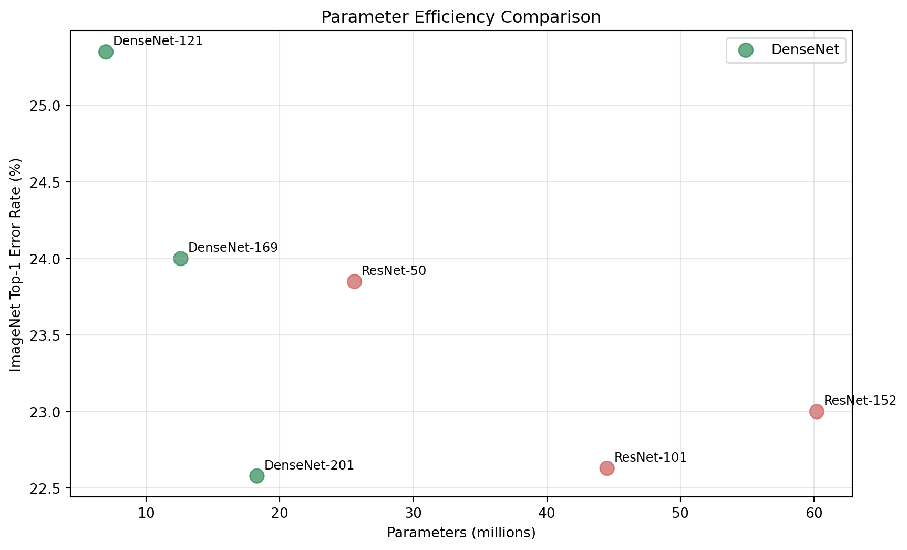

DenseNet (Densely Connected Convolutional Networks) represents a significant advancement in deep learning architecture design, introduced by Gao Huang, Zhuang Liu, Laurens van der Maaten, and Kilian Q. Weinberger in their 2017 paper “Densely Connected Convolutional Networks.” This architecture addresses fundamental challenges in training very deep neural networks while achieving remarkable efficiency and performance across various computer vision tasks.
Key Innovation
The core innovation of DenseNet lies in its dense connectivity pattern, where each layer receives feature maps from all preceding layers and passes its own feature maps to all subsequent layers.
This seemingly simple modification to traditional convolutional architectures yields profound improvements in gradient flow, feature reuse, and parameter efficiency.
The Problem with Traditional Deep Networks
Before understanding DenseNet’s innovations, it’s crucial to recognize the challenges that deep convolutional networks face as they grow deeper. Traditional architectures like VGG and early versions of ResNet suffered from several key issues:
As networks become deeper, gradients can become exponentially smaller during backpropagation, making it difficult to train the early layers effectively. This leads to poor convergence and suboptimal performance.
In conventional feed-forward architectures, information flows linearly from input to output. As information passes through multiple layers, important details from earlier layers can be lost or diluted.
Many deep networks contain redundant parameters that don’t contribute meaningfully to the final prediction. This inefficiency leads to larger models without proportional performance gains.
Traditional architectures don’t effectively reuse features computed in earlier layers, leading to redundant computations and missed opportunities for feature combination.
DenseNet Architecture Overview
DenseNet addresses these challenges through its distinctive dense connectivity pattern. The architecture is built around dense blocks, where each layer within a block receives inputs from all preceding layers in that block.
Code
graph TD A[Input Image] --> B[Initial Conv Layer] B --> C[Dense Block 1] C --> D[Transition Layer 1] D --> E[Dense Block 2] E --> F[Transition Layer 2] F --> G[Dense Block 3] G --> H[Transition Layer 3] H --> I[Dense Block 4] I --> J[Global Average Pooling] J --> K[Classifier] K --> L[Output] style C fill:#e1f5fe style E fill:#e1f5fe style G fill:#e1f5fe style I fill:#e1f5fe
graph TD
A[Input Image] --> B[Initial Conv Layer]
B --> C[Dense Block 1]
C --> D[Transition Layer 1]
D --> E[Dense Block 2]
E --> F[Transition Layer 2]
F --> G[Dense Block 3]
G --> H[Transition Layer 3]
H --> I[Dense Block 4]
I --> J[Global Average Pooling]
J --> K[Classifier]
K --> L[Output]
style C fill:#e1f5fe
style E fill:#e1f5fe
style G fill:#e1f5fe
style I fill:#e1f5fe
The fundamental building unit of DenseNet is the dense block. Within each dense block, the \(l\)-th layer receives feature maps from all preceding layers \((x_0, x_1, ..., x_{l-1})\) and produces \(k\) feature maps as output.
Composite Function
The composite function \(H_l\) typically consists of:
Batch Normalization (BN)
ReLU activation
3×3 Convolution
The key equation governing dense connectivity is:
\[
x_l = H_l([x_0, x_1, ..., x_{l-1}])
\]
Where \([x_0, x_1, ..., x_{l-1}]\) represents the concatenation of feature maps from layers 0, 1, …, \(l-1\).
Growth Rate
The growth rate (\(k\)) is a hyperparameter that determines how many feature maps each layer adds to the “collective knowledge” of the network. Even with small growth rates (\(k=12\) or \(k=32\)), DenseNet achieves excellent performance because each layer has access to all preceding feature maps within the block.
Transition Layers
Between dense blocks, transition layers perform dimensionality reduction and spatial downsampling:
Transition Layer Components:
Batch Normalization
1×1 Convolution (channel reduction)
2×2 Average Pooling (spatial downsampling)
The compression factor \(\theta\) (typically 0.5) determines how much the number of channels is reduced in transition layers, helping control model complexity.
Figure 2: Comparison of gradient flow in traditional networks vs DenseNet
DenseNet’s dense connections create multiple short paths between any two layers, significantly improving gradient flow during backpropagation. This addresses the vanishing gradient problem that plagued earlier deep architectures.
Feature Reuse and Efficiency
The dense connectivity pattern maximizes information flow and feature reuse throughout the network. Later layers can directly access features from all earlier layers, eliminating the need to recompute similar features.
Parameter Efficiency
A DenseNet-121 with 7.0M parameters can outperform a ResNet-152 with 60.2M parameters on ImageNet.
Regularization Effect
The dense connections inherently provide a regularization effect. Since each layer contributes to multiple subsequent layers’ inputs, the network is less likely to overfit to specific pathways.
DenseNet Variants and Configurations
Standard DenseNet Architectures
Table 1: DenseNet standard configurations
Model
Dense Blocks
Layers per Block
Growth Rate
Parameters
DenseNet-121
4
[6, 12, 24, 16]
k=32
7.0M
DenseNet-169
4
[6, 12, 32, 32]
k=32
12.6M
DenseNet-201
4
[6, 12, 48, 32]
k=32
18.3M
DenseNet-264
4
[6, 12, 64, 48]
k=32
33.3M
DenseNet-BC (Bottleneck and Compression)
DenseNet-BC introduces two important modifications:
Bottleneck Layers Each 3×3 convolution is preceded by a 1×1 convolution that reduces the number of input channels to 4k, improving computational efficiency.
Compression Transition layers reduce the number of channels by a factor \(\theta < 1\), typically 0.5, which helps control model size and computational cost.
Implementation Details
Memory Optimization
# Pseudocode for memory-efficient DenseNet implementationdef efficient_densenet_forward(x, layers): features = [x]for layer in layers:# Use checkpointing for memory efficiency new_features = checkpoint(layer, torch.cat(features, 1)) features.append(new_features)return torch.cat(features, 1)
Memory Considerations
One challenge with DenseNet is memory consumption due to concatenating feature maps from all previous layers. Several optimization strategies address this:
Memory-Efficient Implementation: Using checkpointing and careful memory management
Shared Memory Allocations: Reusing memory buffers for intermediate computations
Gradient Checkpointing: Trading computation for memory
Training Considerations
Training DenseNet effectively requires attention to several factors:
Learning Rate Schedule: Often benefits from more gradual decay compared to ResNet
Batch Size: Due to memory requirements, smaller batch sizes are often necessary
Data Augmentation: Standard techniques work well (random crops, horizontal flips, color jittering)
Performance and Benchmarks
ImageNet Classification
Code
import matplotlib.pyplot as pltimport numpy as np# Data for different modelsmodels = ['DenseNet-121', 'DenseNet-169', 'DenseNet-201', 'ResNet-50', 'ResNet-101', 'ResNet-152']params = [7.0, 12.6, 18.3, 25.6, 44.5, 60.2] # in millionserror_rates = [25.35, 24.00, 22.58, 23.85, 22.63, 23.00]# Create the plotplt.figure(figsize=(10, 6))colors = ['#2E8B57'if'DenseNet'in model else'#CD5C5C'for model in models]plt.scatter(params, error_rates, c=colors, s=100, alpha=0.7)for i, model inenumerate(models): plt.annotate(model, (params[i], error_rates[i]), xytext=(5, 5), textcoords='offset points', fontsize=9)plt.xlabel('Parameters (millions)')plt.ylabel('ImageNet Top-1 Error Rate (%)')plt.title('Parameter Efficiency Comparison')plt.grid(True, alpha=0.3)plt.legend(['DenseNet', 'ResNet'], loc='upper right')plt.show()

Figure 3: ImageNet top-1 error rates vs number of parameters for different architectures
CIFAR Datasets
CIFAR-10 Results
DenseNet (L=190, k=40): 3.46% error rate
Excellent performance on this benchmark dataset
CIFAR-100 Results
DenseNet (L=190, k=40): 17.18% error rate
Superior to many contemporary architectures
Applications and Use Cases
Computer Vision Tasks
Code
mindmap root((DenseNet Applications)) Classification ImageNet Medical Imaging Remote Sensing Detection Object Detection Face Detection Autonomous Driving Segmentation Semantic Segmentation Medical Segmentation Industrial Inspection Transfer Learning Fine-grained Classification Domain Adaptation Few-shot Learning
mindmap
root((DenseNet Applications))
Classification
ImageNet
Medical Imaging
Remote Sensing
Detection
Object Detection
Face Detection
Autonomous Driving
Segmentation
Semantic Segmentation
Medical Segmentation
Industrial Inspection
Transfer Learning
Fine-grained Classification
Domain Adaptation
Few-shot Learning
Figure 4: DenseNet applications across different computer vision tasks
Domain-Specific Adaptations
Medical Imaging: Parameter efficiency valuable when data is limited
Remote Sensing: Multi-scale feature capture for satellite imagery
Industrial Applications: Quality control and defect detection
Advantages and Limitations
✅ Advantages
Parameter Efficiency: Better performance with fewer parameters
Strong Gradient Flow: Robust gradient propagation
Feature Reuse: Maximum utilization of learned features
Memory-Efficient Variants: Maintaining benefits while reducing memory
Multi-Modal Applications: Extending to multi-modal learning
Continual Learning: Leveraging dense connectivity for lifelong learning
Conclusion
DenseNet represents a fundamental shift in how we think about information flow in deep neural networks. By connecting each layer to every other layer in a feed-forward fashion, DenseNet addresses key challenges in training very deep networks while achieving remarkable parameter efficiency.
Key Takeaways
The architecture’s success stems from its ability to:
Maximize information flow and feature reuse
Achieve stronger gradient flow and implicit regularization
Create compact yet powerful models
Provide excellent transferability across domains
For practitioners, DenseNet offers an excellent balance of performance, efficiency, and transferability, making it a valuable tool in the deep learning toolkit. Its principles continue to inspire new developments in neural architecture design.